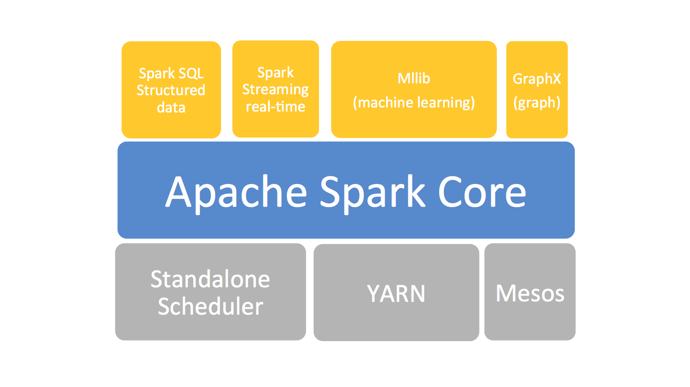
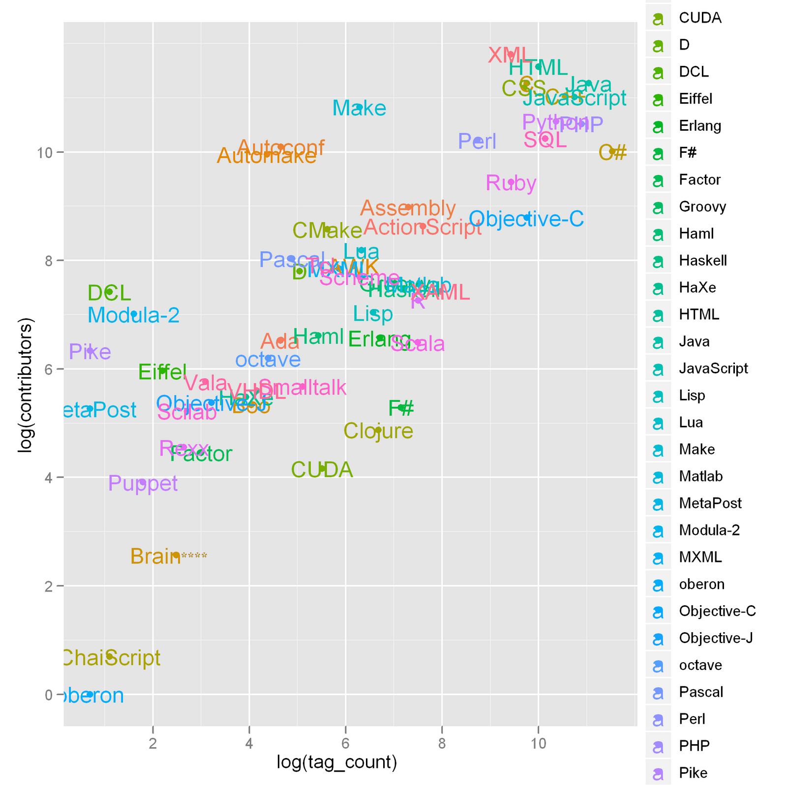

Why Spark with Python ?¶
Note
Sharpening the knife longer can make it easier to hack the firewood – old Chinese proverb
I want to answer this question in two folders:
Why Spark?¶
I think the following four main reasons form Apache Spark™ official website are good enough to convince you to use Spark.
Speed
Run programs up to 100x faster than Hadoop MapReduce in memory, or 10x faster on disk.
Apache Spark has an advanced DAG execution engine that supports acyclic data flow and in-memory computing.

Fig. 2 Logistic regression in Hadoop and Spark
Ease of Use
Write applications quickly in Java, Scala, Python, R.
Spark offers over 80 high-level operators that make it easy to build parallel apps. And you can use it interactively from the Scala, Python and R shells.
Generality
Combine SQL, streaming, and complex analytics.
Spark powers a stack of libraries including SQL and DataFrames, MLlib for machine learning, GraphX, and Spark Streaming. You can combine these libraries seamlessly in the same application.
Fig. 3 The Spark stack
{kind=link}
Runs Everywhere
Spark runs on Hadoop, Mesos, standalone, or in the cloud. It can access diverse data sources including HDFS, Cassandra, HBase, and S3.

Fig. 4 The Spark platform
Why Spark with Python (PySpark)?¶
No matter you like it or not, Python has been one of the most popular programming languages.
Fig. 5 programming language popularity from R-Chart